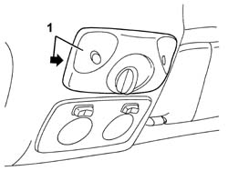
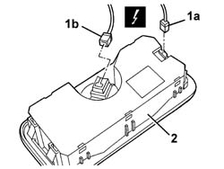

5580E22 ANTI-THEFT DEVICE SIREN - R+R
- Path
- Procedures > 55 ELECTRICAL EQUIPMENT > 5580 SPECIAL ACCESSORIES > 5580E ANTI-THEFT DEVICE > 5580E22 ANTI-THEFT DEVICE SIREN - R+R
- Kind
- repair procedure (removal / refitting; the operation number is the code)
- Applies to
- all engines; all production periods
- Interactive page
- https://sloeber94.github.io/elrnDB-aGt/en/#/125001740
Applies to: all engines; all production periods
 Removing
Removing
 Refitting
Refitting1. Remove the volumetric sensors unit. Work on the side shown in the diagram.

Applies to: all engines; all production periods
1. Disconnect the electrical connections (1a, 1b).
Name | Connector | |
|---|---|---|
1a | Alarm volumetric sensors assembly | See K62 ALARM VOLUMETRIC SENSORS ASSEMBLY ( REAR ) |
2. Keep the volumetric sensors unit.

Applies to: all engines; all production periods
Refitting
RemovingCheck that the volumetric sensors unit is not damaged.
Connect the electrical connections .
Fit the volumetric sensors unit in place.
Connect the battery.
Check the operation of the system using the Examiner or another tester.